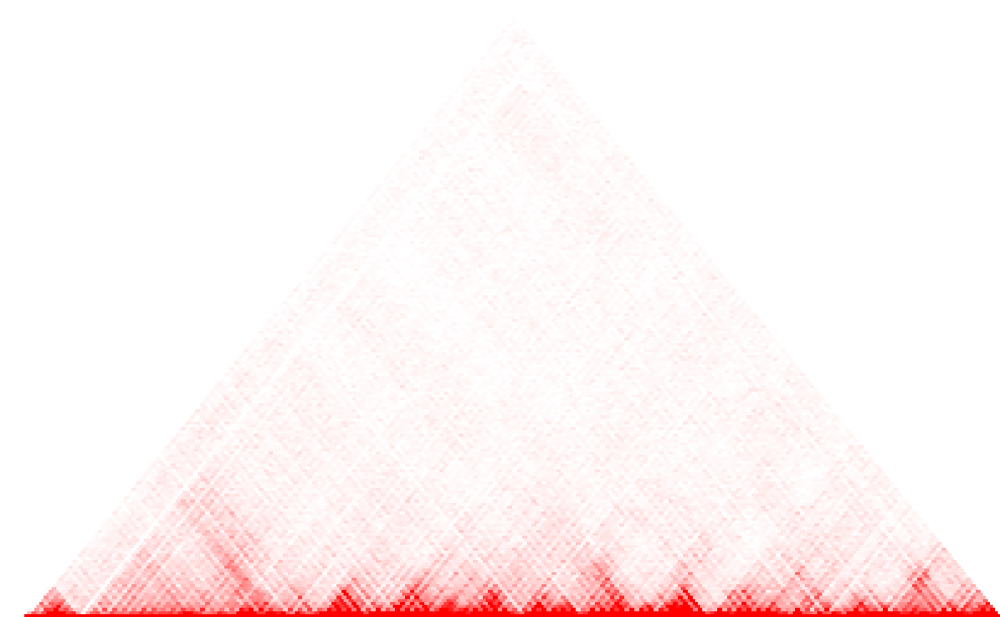
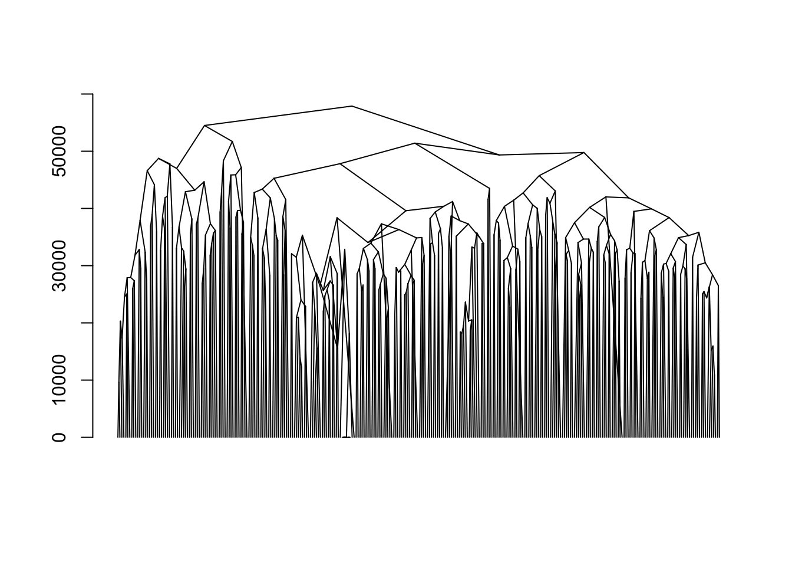

vignettes/hicClust.Rmd
hicClust.Rmd# this vignette is not created if HiTC is not installed if (!require("HiTC", quietly = TRUE)) { knitr::opts_chunk$set(eval = FALSE) }
##
## Attaching package: 'BiocGenerics'## The following objects are masked from 'package:parallel':
##
## clusterApply, clusterApplyLB, clusterCall, clusterEvalQ,
## clusterExport, clusterMap, parApply, parCapply, parLapply,
## parLapplyLB, parRapply, parSapply, parSapplyLB## The following objects are masked from 'package:stats':
##
## IQR, mad, sd, var, xtabs## The following objects are masked from 'package:base':
##
## anyDuplicated, append, as.data.frame, basename, cbind, colnames,
## dirname, do.call, duplicated, eval, evalq, Filter, Find, get, grep,
## grepl, intersect, is.unsorted, lapply, Map, mapply, match, mget,
## order, paste, pmax, pmax.int, pmin, pmin.int, Position, rank,
## rbind, Reduce, rownames, sapply, setdiff, sort, table, tapply,
## union, unique, unsplit, which, which.max, which.min##
## Attaching package: 'S4Vectors'## The following object is masked from 'package:base':
##
## expand.gridHi-C is a sequencing-based molecular assay designed to measure intra and interchromosomal interactions between the DNA molecule. In particular, the identification of Topologically-Associated Domains (TADs), that is, of regions of the genome in which physical interactions are frequent, provides insight into the three-dimensional organization of a genome [1].
Hi-C data are in the form of two-dimensional contact maps, i.e., matrices whose \(i,j\) entry quantifies the intensity of the physical interaction between two genome regions \(i\) and \(j\) at the DNA level. In this vignette, we demonstrate the use of adjclust::hicClust to perform adjacency-constrained hierarchical agglomerative clustering (HAC) of Hi-C contact maps. The output of this function is a dendrogram, which can be cut to identify TADs. The algorithm used for adjacency-constrained (HAC) is described in the third chapter of [2].
library("adjclust")
The data set hic_imr90_40_XX is an object of class HTCexp which has been obtained from the HiTC package [3]. It is a contact map corresponding to the first 500 x 500 bins on chromosome X vs chromosome X.
load(system.file("extdata", "hic_imr90_40_XX.rda", package = "adjclust"))
The script used to create this map can be found by executing the following command:
system.file("system/create_hic_chrXchrX.R", package="adjclust")
Now we have a look at the data.
HiTC::mapC(hic_imr90_40_XX)

hicClust
hicClust operates directly on objects of class HTCexp
fit <- hicClust(hic_imr90_40_XX)
## Note: 137 merges with non increasing heights.It is also possible to work on binned data. Below we choose a bin size of \(5 \times 10^5\):

fitB <- hicClust(binned) fitB
##
## Call:
## run.adjclust(mat = mat, type = type, h = h)
##
## Cluster method : hicClust
## Number of objects: 205The output is of class chac. In particular, it can be plotted as a dendrogram silently relying on the function plot.dendrogram:
plot(fitB)
## Warning in plot.chac(fitB):
## Detected reversals in dendrogram: mode = 'corrected', 'within-disp' or 'total-disp' might be more relevant.
Moreover, the output contains an element named merge which describes the successive merges of the clustering, and an element gains which gives the improvement in the criterion optimized by the clustering at each successive merge.
## [,1] [,2]
## [1,] -3 -4
## [2,] -2 1
## [3,] 2 -5
## [4,] -1 3
## [5,] 4 -6
## [6,] -17 -18Contacts maps can also be stored as objects of class Matrix::dsCMatrix, or as plain text files. These types of input are also accepted as first argument to hicClust.
[1] Dixon J.R., et al (2012). Topological domains in mammalian genomes identified by analysis of chromatin interactions. Nature, 485(7398), 376.
[2] Dehman A. (2015). Spatial clustering of linkage disequilibrium blocks for genome-wide association studies. Phd Thesis, Université Paris Saclay.
[3] Servant N., et al (2012). HiTC: Exploration of High-Throughput ‘C’ experiments. Bioinformatics, 28(21), 2843-2844.
## R version 4.0.0 alpha (2020-04-05 r78150)
## Platform: x86_64-apple-darwin17.0 (64-bit)
## Running under: macOS Mojave 10.14.6
##
## Matrix products: default
## BLAS: /Library/Frameworks/R.framework/Versions/4.0/Resources/lib/libRblas.dylib
## LAPACK: /Library/Frameworks/R.framework/Versions/4.0/Resources/lib/libRlapack.dylib
##
## locale:
## [1] en_US.UTF-8/fr_FR.UTF-8/en_US.UTF-8/C/en_US.UTF-8/en_US.UTF-8
##
## attached base packages:
## [1] stats4 parallel stats graphics grDevices utils datasets
## [8] methods base
##
## other attached packages:
## [1] adjclust_0.5.99 HiTC_1.32.0 GenomicRanges_1.40.0
## [4] GenomeInfoDb_1.24.0 IRanges_2.22.2 S4Vectors_0.26.1
## [7] BiocGenerics_0.34.0
##
## loaded via a namespace (and not attached):
## [1] Rcpp_1.0.4 compiler_4.0.0
## [3] RColorBrewer_1.1-2 XVector_0.28.0
## [5] bitops_1.0-6 tools_4.0.0
## [7] zlibbioc_1.34.0 digest_0.6.25
## [9] evaluate_0.14 memoise_1.1.0
## [11] lattice_0.20-41 rlang_0.4.5
## [13] Matrix_1.2-18 DelayedArray_0.14.0
## [15] rstudioapi_0.11 yaml_2.2.1
## [17] pkgdown_1.5.1 xfun_0.12
## [19] GenomeInfoDbData_1.2.3 rtracklayer_1.47.0
## [21] stringr_1.4.0 knitr_1.28
## [23] desc_1.2.0 Biostrings_2.56.0
## [25] fs_1.3.2 rprojroot_1.3-2
## [27] grid_4.0.0 Biobase_2.48.0
## [29] R6_2.4.1 BiocParallel_1.22.0
## [31] XML_3.99-0.3 rmarkdown_2.1
## [33] magrittr_1.5 matrixStats_0.56.0
## [35] GenomicAlignments_1.24.0 Rsamtools_2.4.0
## [37] backports_1.1.5 htmltools_0.4.0
## [39] MASS_7.3-51.5 SummarizedExperiment_1.18.1
## [41] assertthat_0.2.1 capushe_1.1.1
## [43] stringi_1.4.6 RCurl_1.98-1.2
## [45] crayon_1.3.4